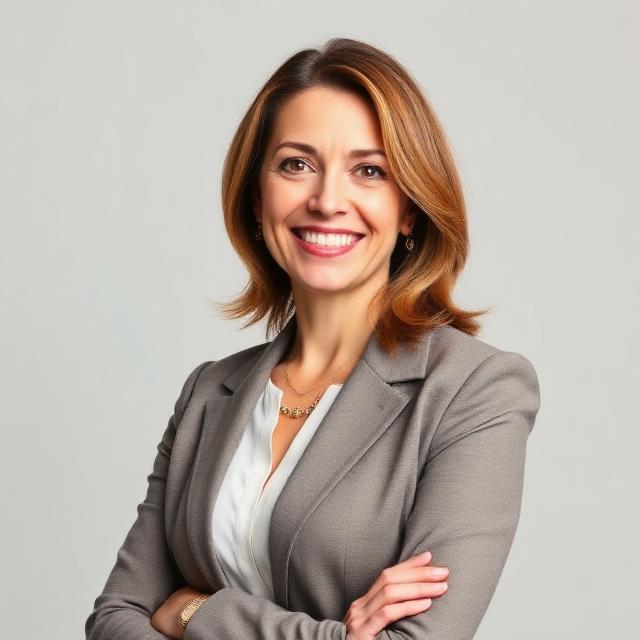

Emily Connor
President
A former hospital administrator turned advocate, Emily founded A Ball For All after witnessing how few resources reach adaptive-sports communities. She steers the organization's vision, partnerships and long-term strategy with one rule: no athlete is ever left on the sideline.